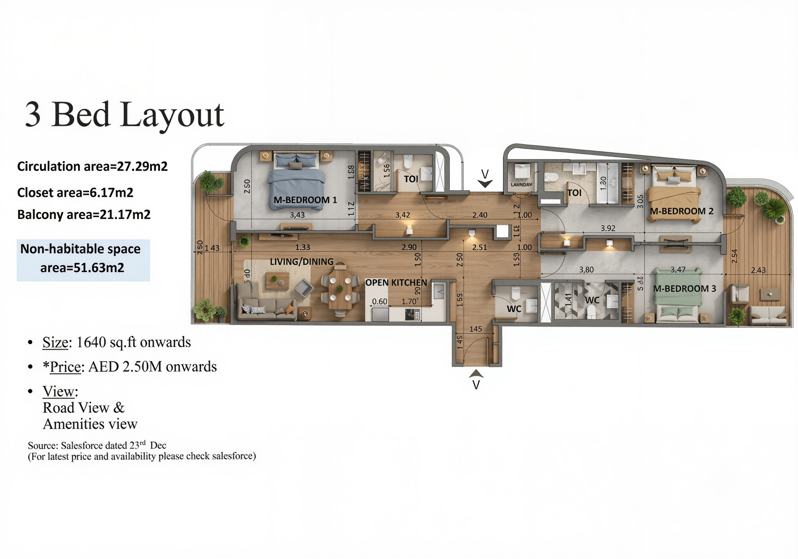

1,640 sq.ft · AED 2,500,000 · Road View & Amenities View · Jumeirah Village Circle
Developer-issued plan — New Ruby, JVC. Source: Salesforce, Dec 2023. All analysis in this report is based on dimensions and zone labels as annotated on this plan.

The developer's own plan data confirms a significant inefficiency in area distribution. Of 152.36 m² purchased, the total usable interior area (primary rooms + wet areas + closets) is 103.94 m² — 68.2% of BUA. The remaining 17.9% is pure lost circulation with no functional return. Bathrooms and closets are retained as separate usable categories below — they are habitable service areas, not wasted space.
Area Calculation Note
Developer confirmed data: Circulation = 27.29 m² · Closets = 6.17 m² · Balcony = 21.17 m² · Non-habitable subtotal = 51.63 m².
Bathrooms (~18.17 m²) and closets (6.17 m²) are usable service areas — they serve a direct habitable function. Only circulation (27.29 m²) qualifies as lost area — it produces no usable function.
Total usable interior = Primary rooms (~79.6) + Bathrooms (~18.17) + Closets (6.17) = ~103.94 m² (68.2%).
Lost area = Circulation = 27.29 m² (17.9%).
This Plan vs. Standard Benchmark
The plan does NOT achieve a clean public/private split. M-BEDROOM 1 (master) sits on the top-left — the same side as the Living/Dining and Open Kitchen. The left side is a conflict zone, not a coherent public or private zone. Bedrooms 2 and 3 occupy the right side only. There is no unified bedroom wing.
Floor Plan Zone Reading
Confirmed by the developer's own plan annotation: 27.29 m² of circulation. This is the single largest planning deficiency in this layout.
Dimensions confirmed directly from the developer plan. Estimated values are clearly marked. Standards reference: Dubai Municipality residential guidelines and GCC residential best practice.
| Space | Confirmed Dimensions | DBC Minimum Dubai Building Code |
Design Requirement Comfort · GCC Best Practice |
Result |
|---|---|---|---|---|
M-Bedroom 1 3,100 × 4,700mm ✓ Confirmed · Net clear |
14.57 m² Min dim 3.1m · Ensuite TOI · Balcony access · Left wing |
Min dim: 3.0m ✓ Min area: 9.0 m² ✓ |
Min dim: 3.5m preferred Area: 14–16 m² target Bed clearance: 750mm each side Actual: 650mm · 100mm short of comfort standard |
DBC ✓Design ⚠ |
M-Bedroom 2 3,000 × 3,400mm ✓ Confirmed · Net clear |
10.2 m² Min dim 3.0m exactly · Ensuite TOI · Top-right corner |
Min dim: 3.0m ✓ (at limit) Min area: 9.0 m² ✓ |
Min dim: 3.5m preferred Area: 12–14 m² target Bed clearance: 750mm each side Actual: 600mm · King bed not viable Queen bed max (1,600mm wide) |
DBC min ⚠Design ✗ |
M-Bedroom 3 3,000 × 3,500mm ✓ Confirmed · Net clear |
10.5 m² Min dim 3.0m exactly · Ensuite TOI · Bottom-right |
Min dim: 3.0m ✓ (at limit) Min area: 9.0 m² ✓ |
Min dim: 3.5m preferred Area: 12–14 m² target Bed clearance: 750mm each side Actual: 600mm · King bed not viable Label "M-BEDROOM" not justified at 3.0m width |
DBC min ⚠Design ✗ |
Living / Dining 5,330 × 3,400mm ✓ Confirmed from plan · 2.90m excluded (entrance/circulation) |
18.12 m² · Depth 3.40m confirmed 6-seater dining fits · Sofa zone functional · Depth 600mm below design minimum |
Min dim: 3.0m ✓ Min area: 16 m² ✓ (18.12 m²) |
Depth: 4,000mm min preferred Actual depth: 3,400mm · 600mm short Sofa + coffee table + TV zone is tight Width 5,330mm acceptable for combined use |
DBC ✓Design ⚠ |
Open Kitchen 2,920 × 1,700mm ✓ Both dims confirmed from plan · Counter 600mm |
4.96 m² · Single-wall galley Counter 600mm → clear passage 1,100mm · Single-person use only · Counter run ~2.3m effective · No island possible |
Min area: 5.0 m² Actual: 4.96 m² — BELOW DBC min Min passage: 900mm ✓ |
Area: 9–12 m² for open plan Working passage: 1,200mm min (comfort) Counter run: ≥ 3.0m linear Actual passage: 1,100mm · Below 1,200mm comfort Counter run: ~2.3m vs. 3.0m target Kitchen area below DBC minimum |
DBC ✗Design ✗ |
Ensuites × 3 (TOI) Individual dims unconfirmed ✓ 3 ensuites confirmed |
Est. ~4.5 m² avg. Functional · Each bedroom has private access |
Min area: 2.5 m² ✓ Min width: 900mm ✓ |
Comfortable: 3.5–5.0 m² Shower + WC + basin layout Est. adequate · Confirm dims before fit-out brief |
DBC ✓Design est. ⚠ |
WC (Common) Approx. 1.5–1.8 m² ✓ Separate WC confirmed |
Toilet + basin Guest accessible · No shower required |
Min area: 1.2 m² ✓ Toilet + basin: required ✓ |
Comfortable: 1.8–2.2 m² Estimated within comfort range |
DBC ✓Design ✓ |
Circulation 27.29 m² total ✓ Confirmed from plan |
17.9% of BUA +9 m² above design target · Full-length horizontal spine |
Min corridor: 900mm ✓ No max % in DBC |
Target: ≤ 12% of BUA Max acceptable: 18.3 m² Actual: 27.29 m² · Exceeds by 9 m² Dead corridor — no functional return |
DBC ✓Design ✗✗ |
Confirmed dimensions: 5,330mm wide × 3,400mm deep = 18.12 m². The 2,900mm to the right of this zone is entrance and circulation — not part of the living/dining area. Width is functional but depth at 3,400mm is 600mm below the 4,000mm design minimum.
Confirmed dimensions: 2,920mm × 1,700mm = 4.96 m². Counter depth confirmed at 600mm → clear working passage: 1,100mm. Net area of 4.96 m² falls below the DBC minimum of 5.0 m² for a kitchen. The developer markets this as an "Open Kitchen" — neither the area nor the layout supports that label.
What is missing
All three rooms are labeled "M-BEDROOM" by the developer. The quality gap between Bedroom 1 and Bedroom 3 is significant.
The bathroom provision (3 ensuites + 1 WC) is above standard for this typology. Individual dimensions are not fully confirmed.
21.17 m² of balcony area is a strong lifestyle offering. The question is whether it justifies the internal space trade-off.
Confirmed closet area of 6.17 m² is acceptable for a 3-bedroom unit. The distribution and activation of the circulation spine as storage is the missed opportunity.
Interior Design Opportunity
The long central corridor represents the best interior design intervention available in this layout. Without structural changes, the corridor can be partially activated with: built-in linen storage, full-height display cabinetry, a compact pantry unit adjacent to the kitchen, entry console with shoe storage, and wall-integrated lighting features — converting dead circulation into a spatial experience while improving storage. This is the primary recommendation for any fit-out brief.
This layout is functional but inefficient. It delivers three bedrooms, three ensuites, a generous balcony, and clear public/private separation. For a buyer who values bedroom count, bathroom provision, and outdoor space, the plan is liveable and above average in those specific categories.
However, the plan is not a strong use of 1,640 square feet. The developer has made structural choices — an elongated plan form, a narrow kitchen, a wide circulation spine, and a left-side corridor that serves both the master bedroom and guest access to the living zone simultaneously — that cannot be resolved through interior design. M-BEDROOM 1 is acoustically exposed to both guest corridor traffic and kitchen proximity noise. The separation of Bedroom 1 from Bedrooms 2 and 3 is not inherently negative — for a family, this configuration gives parents acoustic distance from children — but the shared guest/private corridor on the left side remains an unresolved privacy deficiency.
The circulation figure of 27.29 m² (17.9%) is the clearest evidence of this. It is not estimated — it is printed on the developer's own plan. That single data point confirms that this layout was designed to maximise saleable metrics (bedroom count, bathroom count, balcony size) rather than to maximise livability quality.